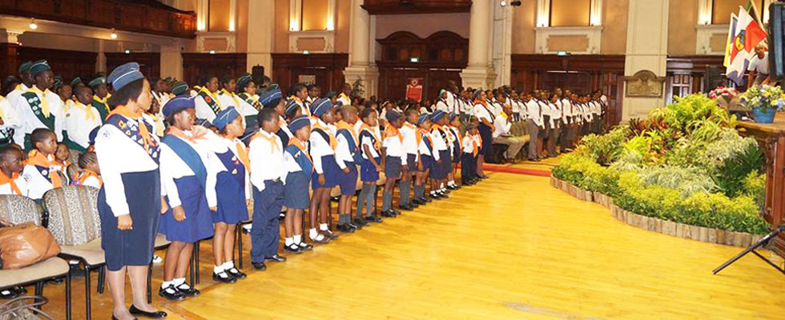
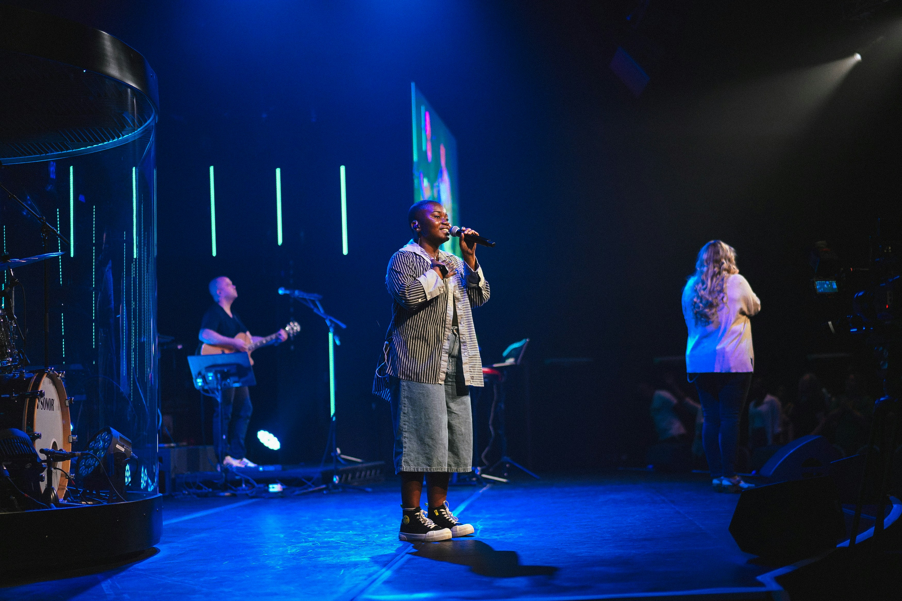
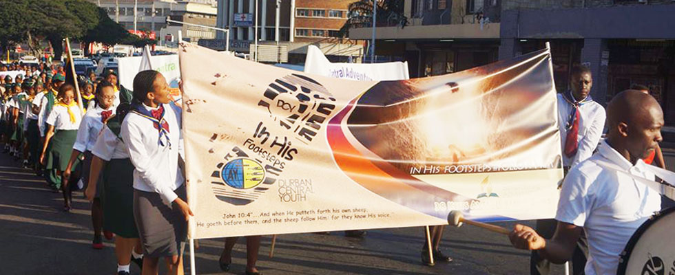

Children's Ministry
Fun, faith-filled Sabbath School classes that help kids build a real friendship with Jesus.
Learn more →Worship with us and become part of our church family. Whether you're new to faith, new to Durban, or just looking for a church home, there's a seat for you.

Saturdays, 9:00 AM – 10:15 AM
Bible study for all ages
Saturdays, 10:30 AM – 12:30 PM
Worship, music & message
Wednesdays, 6:00 PM – 7:00 PM
Midweek prayer & devotion
38 Keits Avenue, Berea , Durban Central
Parking available on-site
For decades, Durban Central SDA Church has been a home for people seeking to know God and grow together as a community. We believe in the soon return of Jesus Christ, and we try to live that hope out through worship, service, and genuine friendship.
Come as you are. Our doors — and our hearts — are open to visitors, longtime members, and anyone still figuring out what they believe.
A few of the ways our members connect, serve, and grow.
Fun, faith-filled Sabbath School classes that help kids build a real friendship with Jesus.
Learn more →
Adventure, mentorship, and character-building for children, tweens and teens.
Learn more →
Choir, praise team and instrumentalists leading the congregation in worship each week.
Learn more →
Food parcels, clothing drives and ADRA-supported outreach to families in need around Durban.
Learn more →
Cooking classes, wellness talks and health screenings rooted in a whole-person approach to health.
Learn more →
A team of intercessors ready to pray with you over any need, big or small.
Learn more →Can't make it in person? Join our Divine Service live every Saturday at 10:30 AM SAST, streamed straight from our sanctuary to wherever you're watching.

Saturday, October 18, 2026 | 10:30 AM - 12:30 PM
Find Out More
"I walked in not knowing a single person and left with a whole church family. Everyone made room for me."
Thandiwe M. — Member since 2019
"The Bible study groups helped me actually understand Scripture, not just read it. It changed how I pray."
Sipho N. — Member since 2021
"Pathfinders gave my kids friends, discipline, and a real love for the outdoors and for God."
Naledi K. — Parent
"Come unto me, all ye that labour and are heavy laden, and I will give you rest."
Matthew 11:28, KJV
Our prayer team would be honoured to stand with you. No request is too big or too small.
Submit A Prayer RequestYour tithes and offerings sustain our ministry and outreach here in Durban.
Address: 38 Keits Avenue, Berea , Durban Central
Phone: +27 74 954 8080
Email: info@durbancentralsda.org
Sabbath School: 9:00 AM | Divine Service: 10:30 AM
Get Directions